Conjuntos de equipo
Llevar puestas varias piezas del mismo conjunto suma un bono. La mejora +0…+20 de cada pieza no multiplica el bono del conjunto.
Ranuras de equipo
Casco (91), Pechera (89), Pantalones (77), Botas (78), Alas o capa (46), Anillo (25), Amuleto (31), Mano secundaria (16), Espalda (mochila) (6), Cinturón (2).
Paso Ligero
Bono con 4 piezas: Estamina +25, Esquiva +3 %
 Gorro de cuero
Gorro de cuero Jubón de cuero
Jubón de cuero Calzas de cuero
Calzas de cuero Botas de cuero
Botas de cueroGuardia de Hierro
Bono con 4 piezas: Armadura +10, Vida +20
 Yelmo de hierro
Yelmo de hierro Coraza de hierro
Coraza de hierro Grebas de hierro
Grebas de hierro Botas de hierro
Botas de hierroFuria del Dragón
Bono con 4 piezas: Probabilidad de crítico +8 %, Daño crítico +50 %, Resistencia al fuego +30 %
 Yelmo del Dragón
Yelmo del Dragón Coraza del Dragón
Coraza del Dragón Botas del Dragón
Botas del DragónResplandor de Mina
Bono con 4 piezas: Velocidad de minado +10 %
 Yelmo de Cobre Minero
Yelmo de Cobre Minero Pechera de Cobre Minero
Pechera de Cobre Minero Grebas de Cobre Minero
Grebas de Cobre Minero Botas de Cobre Minero
Botas de Cobre MineroFirmeza del Centurión
Bono con 4 piezas: Armadura +6
 Yelmo de Bronce de Conquistador
Yelmo de Bronce de Conquistador Coraza de Bronce de Conquistador
Coraza de Bronce de Conquistador Grebas de Bronce de Conquistador
Grebas de Bronce de Conquistador Botas de Bronce de Conquistador
Botas de Bronce de ConquistadorBaluarte de Hierro
Bono con 4 piezas: Armadura +6, Vida +10
 Yelmo de Acero Templado
Yelmo de Acero Templado Coraza de Acero Templado
Coraza de Acero Templado Grebas de Acero Templado
Grebas de Acero Templado Botas de Acero Templado
Botas de Acero TempladoAura de Luz Pura
Bono con 4 piezas: Regeneración de maná +2
 Yelmo de Plata del Cruzado
Yelmo de Plata del Cruzado Coraza de Plata del Cruzado
Coraza de Plata del Cruzado Grebas de Plata del Cruzado
Grebas de Plata del Cruzado Botas de Plata del Cruzado
Botas de Plata del CruzadoAislamiento Tóxico
Bono con 4 piezas: Resistencia al veneno +40 %
 Yelmo de Plomo del Alquimista
Yelmo de Plomo del Alquimista Coraza de Plomo del Alquimista
Coraza de Plomo del Alquimista Grebas de Plomo del Alquimista
Grebas de Plomo del Alquimista Botas de Plomo del Alquimista
Botas de Plomo del AlquimistaDanza de Titanio
Bono con 4 piezas: Estamina +40, Esquiva +5 %
 Casco de Titanio del Explorador
Casco de Titanio del Explorador Coraza de Titanio del Explorador
Coraza de Titanio del Explorador Grebas de Titanio del Explorador
Grebas de Titanio del Explorador Botas de Titanio del Explorador
Botas de Titanio del ExploradorFuria Ígnea de la Roca
Bono con 4 piezas:
 Yelmo de Obsidiana del Verdugo
Yelmo de Obsidiana del Verdugo Coraza de Obsidiana del Verdugo
Coraza de Obsidiana del Verdugo Grebas de Obsidiana del Verdugo
Grebas de Obsidiana del Verdugo Botas de Obsidiana del Verdugo
Botas de Obsidiana del VerdugoGracia del Océano
Bono con 4 piezas: Regeneración +2, Velocidad de movimiento +8 %
 Corona de Nácar de las Mareas
Corona de Nácar de las Mareas Coraza de Nácar de las Mareas
Coraza de Nácar de las Mareas Grebas de Nácar de las Mareas
Grebas de Nácar de las Mareas Aletas de Nácar de las Mareas
Aletas de Nácar de las MareasFluidez de Mithril
Bono con 4 piezas: Regeneración de maná +3, Daño +0,1
 Tiara Rúnica de Mithril
Tiara Rúnica de Mithril Cota de Malla de Mithril
Cota de Malla de Mithril Grebas de Mithril de los Altos Elfos
Grebas de Mithril de los Altos Elfos Escarpines de Mithril
Escarpines de MithrilArmadura de Magma Viviente
Bono con 4 piezas:
 Yelmo Ígneo de Basalto
Yelmo Ígneo de Basalto Placas de Corazón de Basalto
Placas de Corazón de Basalto Grebas de Lava
Grebas de Lava Botas de Magma
Botas de MagmaFantasma del Ocaso
Bono con 4 piezas: Esquiva +8 %, Probabilidad de crítico +5 %
 Capucha Sombría del Ocaso
Capucha Sombría del Ocaso Jubón de Sombras del Ocaso
Jubón de Sombras del Ocaso Calzas Umbrías del Ocaso
Calzas Umbrías del Ocaso Botas de Cazador Oscuro
Botas de Cazador OscuroLa Fortaleza Roja
Bono con 4 piezas: Armadura +40, Vida +150
 Yelmo Titánico de Adamantio
Yelmo Titánico de Adamantio Coraza de Adamantio
Coraza de Adamantio Grebas de Asedio de Adamantio
Grebas de Asedio de Adamantio Botas Acorazadas de Adamantio
Botas Acorazadas de AdamantioLlama del Juicio Divino
Bono con 4 piezas: Regeneración +6, Regeneración de maná +4
 Corona Solar de Oricalco
Corona Solar de Oricalco Pectoral de Oricalco
Pectoral de Oricalco Grebas del Amanecer
Grebas del Amanecer Botas del Vástago Solar
Botas del Vástago SolarIra del Dragón Ancestral
Bono con 4 piezas: Daño +0,25, Daño crítico +30 %
 Máscara Cornuda de Dragón
Máscara Cornuda de Dragón Pellejo Acorazado Dracónico
Pellejo Acorazado Dracónico Grebas de Escamas Dracónicas
Grebas de Escamas Dracónicas Botas de Garras Dracónicas
Botas de Garras DracónicasOmnipotencia del Origen
Bono con 4 piezas: Daño +0,2, Resistencia al fuego +80 %, Resistencia al veneno +80 %, Resistencia a la sombra +50 %
 Corona del Origen
Corona del Origen Manto del Arquitecto
Manto del Arquitecto Grebas del Infinito
Grebas del Infinito Calzado del Firmamento
Calzado del FirmamentoManto del Colapso
Bono con 4 piezas:
 Yelmo del Eclipse
Yelmo del Eclipse Coraza de Singularidad
Coraza de Singularidad Grebas de Distorsión
Grebas de Distorsión Botas del Vórtice
Botas del VórticeSeñor de la Tormenta
Bono con 4 piezas: Daño +0,2, Velocidad de ataque +10 %
 Corona del Trueno Divino
Corona del Trueno Divino Malla Eléctrica del Céfiro
Malla Eléctrica del Céfiro Grebas de la Centella
Grebas de la Centella Botas del Relámpago
Botas del RelámpagoPlata Astral Próximamente · Alfa 0.4
Bono con 4 piezas: Regeneración de maná +2
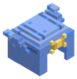
Casco de Plata Astral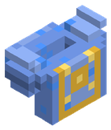
Coraza de Plata Astral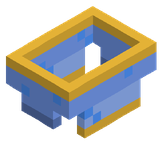
Grebas de Plata Astral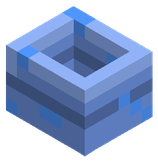
Botas de Plata AstralElectrum Solar Próximamente · Alfa 0.4
Bono con 4 piezas: Probabilidad de crítico +5 %
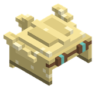
Casco de Electrum Solar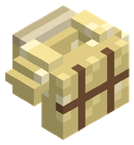
Coraza de Electrum Solar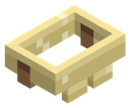
Grebas de Electrum Solar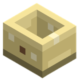
Botas de Electrum SolarTitano-Obsidiana Próximamente · Alfa 0.4
Bono con 4 piezas: Armadura +20
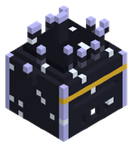
Casco de Titano-Obsidiana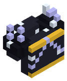
Coraza de Titano-Obsidiana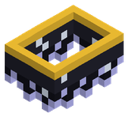
Grebas de Titano-Obsidiana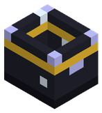
Botas de Titano-ObsidianaMithril de Escarcha Próximamente · Alfa 0.4
Bono con 4 piezas: Estamina +40, Velocidad de movimiento +8 %, Esquiva +4 %
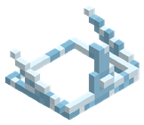
Casco de Mithril de Escarcha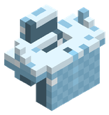
Coraza de Mithril de Escarcha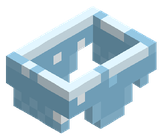
Grebas de Mithril de Escarcha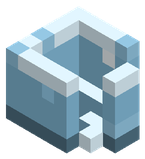
Botas de Mithril de EscarchaTermo-Oricalco Próximamente · Alfa 0.4
Bono con 4 piezas: Resistencia al fuego +40 %
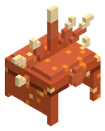
Casco de Termo-Oricalco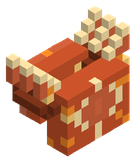
Coraza de Termo-Oricalco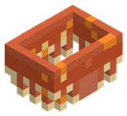
Grebas de Termo-Oricalco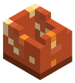
Botas de Termo-OricalcoAleación Gravitacional Próximamente · Alfa 0.4
Bono con 4 piezas: Velocidad de movimiento +10 %, Esquiva +5 %, Estamina +30
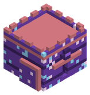
Casco de Aleación Gravitacional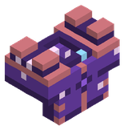
Coraza de Aleación Gravitacional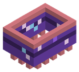
Grebas de Aleación Gravitacional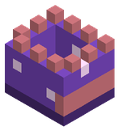
Botas de Aleación GravitacionalÉter Cinético Resonante Próximamente · Alfa 0.4
Bono con 4 piezas: Armadura +25
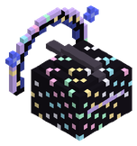
Casco de Éter Cinético Resonante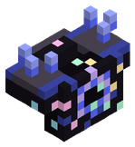
Coraza de Éter Cinético Resonante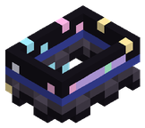
Grebas de Éter Cinético Resonante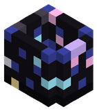
Botas de Éter Cinético ResonanteCaballero Templario Próximamente · Alfa 0.3
Bono con 2 piezas: Armadura +12
Aura de Vapor Próximamente · Alfa 0.4
Bono con 2 piezas: Regeneración de estamina +0,5, Velocidad de movimiento +6 %
Miasma Tóxica Próximamente · Alfa 0.4
Bono con 2 piezas: Resistencia al veneno +20 %
Furia de Chispas Próximamente · Alfa 0.4
Bono con 2 piezas: Probabilidad de crítico +6 %
Zancada de Escarcha Próximamente · Alfa 0.4
Bono con 2 piezas: Esquiva +5 %
Blindaje de Retorsión Próximamente · Alfa 0.4
Bono con 2 piezas: Armadura +20
Explorador
Bono con 2 piezas: Velocidad de movimiento +5 %, Estamina +15
Minero de Fondo Próximamente · Alfa 0.4
Bono con 2 piezas: Velocidad de minado +15 %
Sangre de Dragón Próximamente · Alfa 0.4
Bono con 2 piezas: Resistencia al fuego +30 %
Eclipse Próximamente · Alfa 0.4
Bono con 2 piezas: Daño crítico +30 %
Viento Ingrávido Próximamente · Alfa 0.4
Bono con 2 piezas: Velocidad de movimiento +10 %, Esquiva +5 %, Resistencia al rayo +30 %
Filo Molecular Próximamente · Alfa 0.4
Bono con 2 piezas: Daño crítico +20 %
Ropero: conjuntos decorativos
Vestidos y disfraces sin estadísticas: se fabrican en el telar y se llevan por gusto. 50 conjuntos.
Novia Próximamente · Alfa 0.3
 Tiara con Velo de Novia
Tiara con Velo de Novia Corpiño de Novia
Corpiño de Novia Falda de Novia
Falda de Novia Zapatos de Novia
Zapatos de Novia Velo de Cola de Novia
Velo de Cola de NoviaNovio Próximamente · Alfa 0.3
 Chistera de Novio
Chistera de Novio Frac de Novio
Frac de Novio Pantalón de Novio
Pantalón de Novio Zapatos de Charol
Zapatos de CharolGala Carmesí Próximamente · Alfa 0.3
 Tocado de Rosa Carmesí
Tocado de Rosa Carmesí Corsé de Gala Carmesí
Corsé de Gala Carmesí Falda de Gala Carmesí
Falda de Gala Carmesí Tacones Carmesí
Tacones CarmesíNoche Zafiro Próximamente · Alfa 0.3
 Diadema de Zafiro
Diadema de Zafiro Vestido de Noche Zafiro
Vestido de Noche Zafiro Falda Sirena Zafiro
Falda Sirena Zafiro Tacones de Plata
Tacones de Plata Chal de Gasa Zafiro
Chal de Gasa ZafiroVerano Floral Próximamente · Alfa 0.3
 Corona de Flores
Corona de Flores Vestido de Verano Floral
Vestido de Verano Floral Falda de Verano Floral
Falda de Verano Floral Sandalias de Verano
Sandalias de VeranoPijama de Conejo
 Capucha de Conejo
Capucha de Conejo Pijama de Conejo
Pijama de Conejo Pantalón de Pijama de Conejo
Pantalón de Pijama de Conejo Pantuflas de Conejo
Pantuflas de ConejoEspantapájaros Próximamente · Alfa 0.3
 Calabaza Tallada
Calabaza Tallada Camisa de Espantapájaros
Camisa de Espantapájaros Pantalón de Espantapájaros
Pantalón de Espantapájaros Botas de Espantapájaros
Botas de EspantapájarosCaballero Negro Próximamente · Alfa 0.3
 Yelmo Cornudo del Caballero Negro
Yelmo Cornudo del Caballero Negro Coraza del Caballero Negro
Coraza del Caballero Negro Escarcelas del Caballero Negro
Escarcelas del Caballero Negro Escarpes del Caballero Negro
Escarpes del Caballero Negro Capa Rasgada del Caballero Negro
Capa Rasgada del Caballero NegroGuerrero del Este Próximamente · Alfa 0.3
 Sombrero Cónico de Paja
Sombrero Cónico de Paja Túnica de Seda Carmesí
Túnica de Seda Carmesí Hakama del Guerrero del Este
Hakama del Guerrero del Este Sandalias de Paja
Sandalias de PajaSuperviviente Próximamente · Alfa 0.3
 Casco de Superviviente
Casco de Superviviente Chaleco Táctico
Chaleco Táctico Pantalón Cargo
Pantalón Cargo Botas de Combate
Botas de CombatePirata Próximamente · Alfa 0.3
 Tricornio Pirata
Tricornio Pirata Casaca Pirata
Casaca Pirata Calzones de Pirata
Calzones de Pirata Botas de Pirata
Botas de PirataBruja Próximamente · Alfa 0.3
 Sombrero de Bruja
Sombrero de Bruja Túnica de Bruja
Túnica de Bruja Falda de Bruja
Falda de Bruja Zapatos de Bruja
Zapatos de BrujaEsqueleto Próximamente · Alfa 0.3
 Máscara de Calavera
Máscara de Calavera Camisa de Esqueleto
Camisa de Esqueleto Pantalón de Esqueleto
Pantalón de Esqueleto Botas de Esqueleto
Botas de EsqueletoPaladín de Gala Próximamente · Alfa 0.3
 Yelmo Alado de Gala
Yelmo Alado de Gala Coraza Dorada de Gala
Coraza Dorada de Gala Faldar Dorado de Gala
Faldar Dorado de Gala Escarpes Dorados de Gala
Escarpes Dorados de GalaNinja Próximamente · Alfa 0.3
 Capucha Ninja
Capucha Ninja Gi Ninja
Gi Ninja Pantalón Ninja
Pantalón Ninja Tabi Ninja
Tabi Ninja Bufanda Ninja
Bufanda NinjaRealeza Próximamente · Alfa 0.3
 Corona Real
Corona Real Túnica Real
Túnica Real Faldar Real
Faldar Real Zapatillas Reales
Zapatillas Reales Manto de Armiño
Manto de ArmiñoHada Próximamente · Alfa 0.3
 Diadema de Hada
Diadema de Hada Vestido de Hada
Vestido de Hada Falda de Pétalos
Falda de Pétalos Zapatillas de Hada
Zapatillas de Hada Alas de Mariposa
Alas de MariposaDragón Verde Próximamente · Alfa 0.3
 Capucha de Dragón Verde
Capucha de Dragón Verde Peto de Dragón Verde
Peto de Dragón Verde Faldar de Dragón Verde
Faldar de Dragón Verde Patas de Dragón Verde
Patas de Dragón VerdeAstronauta Próximamente · Alfa 0.3
 Casco de Astronauta
Casco de Astronauta Traje de Astronauta
Traje de Astronauta Pantalón de Astronauta
Pantalón de Astronauta Botas de Astronauta
Botas de AstronautaChef Próximamente · Alfa 0.3
 Gorro de Cocinero
Gorro de Cocinero Chaquetilla de Cocinero
Chaquetilla de Cocinero Pantalón de Cocinero
Pantalón de Cocinero Zuecos de Cocinero
Zuecos de CocineroPapá Noel Próximamente · Alfa 0.3
 Gorro de Papá Noel
Gorro de Papá Noel Abrigo de Papá Noel
Abrigo de Papá Noel Pantalón de Papá Noel
Pantalón de Papá Noel Botas de Papá Noel
Botas de Papá Noel Saco de Regalos
Saco de RegalosElfo Navideño Próximamente · Alfa 0.3
 Gorro de Elfo Navideño
Gorro de Elfo Navideño Túnica de Elfo Navideño
Túnica de Elfo Navideño Medias de Elfo Navideño
Medias de Elfo Navideño Zapatos de Elfo Navideño
Zapatos de Elfo NavideñoMuñeco de Nieve Próximamente · Alfa 0.3
 Cabeza de Muñeco de Nieve
Cabeza de Muñeco de Nieve Cuerpo de Muñeco de Nieve
Cuerpo de Muñeco de Nieve Bola de Muñeco de Nieve
Bola de Muñeco de Nieve Botas de Nieve
Botas de NieveReno
 Capucha de Reno
Capucha de Reno Chaleco de Reno
Chaleco de Reno Pantalón de Reno
Pantalón de Reno Pezuñas de Reno
Pezuñas de RenoGalleta de Jengibre Próximamente · Alfa 0.3
 Cabeza de Galleta de Jengibre
Cabeza de Galleta de Jengibre Cuerpo de Galleta de Jengibre
Cuerpo de Galleta de Jengibre Piernas de Galleta de Jengibre
Piernas de Galleta de Jengibre Pies de Galleta de Jengibre
Pies de Galleta de JengibreVampiro Próximamente · Alfa 0.3
 Peluca de Vampiro
Peluca de Vampiro Frac de Vampiro
Frac de Vampiro Pantalón de Vampiro
Pantalón de Vampiro Zapatos de Vampiro
Zapatos de Vampiro Capa de Vampiro
Capa de VampiroMomia Próximamente · Alfa 0.3
 Vendas de Momia (cabeza)
Vendas de Momia (cabeza) Vendas de Momia (torso)
Vendas de Momia (torso) Vendas de Momia (piernas)
Vendas de Momia (piernas) Vendas de Momia (pies)
Vendas de Momia (pies)Fantasma Próximamente · Alfa 0.3
 Sábana de Fantasma
Sábana de Fantasma Sábana de Fantasma (cuerpo)
Sábana de Fantasma (cuerpo) Sábana de Fantasma (bajo)
Sábana de Fantasma (bajo) Pantuflas de Fantasma
Pantuflas de FantasmaHombre Lobo Próximamente · Alfa 0.3
 Capucha de Hombre Lobo
Capucha de Hombre Lobo Camisa Rota de Hombre Lobo
Camisa Rota de Hombre Lobo Pantalón Roto de Hombre Lobo
Pantalón Roto de Hombre Lobo Zarpas de Hombre Lobo
Zarpas de Hombre LoboZombi Próximamente · Alfa 0.3
 Máscara de Zombi
Máscara de Zombi Camiseta de Zombi
Camiseta de Zombi Pantalón de Zombi
Pantalón de Zombi Pies de Zombi
Pies de ZombiHerrero Próximamente · Alfa 0.3
 Pañuelo de Herrero
Pañuelo de Herrero Delantal de Herrero
Delantal de Herrero Pantalón de Herrero
Pantalón de Herrero Botas de Herrero
Botas de HerreroPescador Próximamente · Alfa 0.3
 Sueste de Pescador
Sueste de Pescador Chubasquero de Pescador
Chubasquero de Pescador Peto de Aguas
Peto de Aguas Botas de Goma
Botas de GomaMinero de Gala Próximamente · Alfa 0.3
 Casco de Minero de Gala
Casco de Minero de Gala Mono de Minero de Gala
Mono de Minero de Gala Pantalón de Minero de Gala
Pantalón de Minero de Gala Botas de Seguridad
Botas de SeguridadGranjero
 Sombrero de Granjero
Sombrero de Granjero Peto de Granjero
Peto de Granjero Vaqueros de Granjero
Vaqueros de Granjero Botas de Granjero
Botas de GranjeroAlquimista Próximamente · Alfa 0.3
 Gafas de Alquimista
Gafas de Alquimista Bata de Alquimista
Bata de Alquimista Pantalón de Alquimista
Pantalón de Alquimista Botas de Alquimista
Botas de AlquimistaPrimavera Próximamente · Alfa 0.3
 Pamela de Primavera
Pamela de Primavera Vestido de Primavera
Vestido de Primavera Falda de Primavera
Falda de Primavera Sandalias de Primavera
Sandalias de PrimaveraVerano Playero Próximamente · Alfa 0.3
 Gorro Playero
Gorro Playero Camisa Hawaiana
Camisa Hawaiana Bermudas Playeras
Bermudas Playeras Chanclas
ChanclasOtoño Próximamente · Alfa 0.3
 Boina de Otoño
Boina de Otoño Jersey de Otoño
Jersey de Otoño Pantalón de Pana
Pantalón de Pana Botas de Otoño
Botas de OtoñoInvierno Próximamente · Alfa 0.3
 Gorro de Lana
Gorro de Lana Abrigo Acolchado
Abrigo Acolchado Pantalón de Esquí
Pantalón de Esquí Botas de Nieve Forradas
Botas de Nieve Forradas Bufanda de Lana
Bufanda de LanaVendimia Próximamente · Alfa 0.3
 Corona de la Vendimia
Corona de la Vendimia Blusa de la Vendimia
Blusa de la Vendimia Falda de la Vendimia
Falda de la Vendimia Zuecos de la Vendimia
Zuecos de la VendimiaMago Próximamente · Alfa 0.3
 Sombrero de Mago
Sombrero de Mago Túnica de Mago
Túnica de Mago Bajos de Túnica de Mago
Bajos de Túnica de Mago Zapatos de Mago
Zapatos de Mago Capa de Mago
Capa de MagoBárbaro Próximamente · Alfa 0.3
 Yelmo de Bárbaro
Yelmo de Bárbaro Correajes de Bárbaro
Correajes de Bárbaro Taparrabos de Bárbaro
Taparrabos de Bárbaro Botas de Pelo de Bárbaro
Botas de Pelo de BárbaroBardo Próximamente · Alfa 0.3
 Gorro de Bardo
Gorro de Bardo Jubón de Bardo
Jubón de Bardo Calzas de Bardo
Calzas de Bardo Zapatos de Bardo
Zapatos de Bardo Laúd a la Espalda
Laúd a la EspaldaPícaro Próximamente · Alfa 0.3
 Capucha de Pícaro
Capucha de Pícaro Chaleco de Pícaro
Chaleco de Pícaro Pantalón de Pícaro
Pantalón de Pícaro Botas Blandas de Pícaro
Botas Blandas de Pícaro Capa Corta de Pícaro
Capa Corta de PícaroDruida Próximamente · Alfa 0.3
 Corona de Druida
Corona de Druida Túnica de Druida
Túnica de Druida Faldar de Hojas de Druida
Faldar de Hojas de Druida Sandalias de Corteza
Sandalias de CortezaSamurái Próximamente · Alfa 0.3
 Kabuto de Samurái
Kabuto de Samurái Dō de Samurái
Dō de Samurái Kusazuri de Samurái
Kusazuri de Samurái Suneate de Samurái
Suneate de SamuráiVaquero Próximamente · Alfa 0.3
 Sombrero de Vaquero
Sombrero de Vaquero Chaleco de Vaquero
Chaleco de Vaquero Chaparreras de Vaquero
Chaparreras de Vaquero Botas de Vaquero
Botas de Vaquero Poncho de Vaquero
Poncho de VaqueroGladiador Próximamente · Alfa 0.3
 Galea de Gladiador
Galea de Gladiador Hombrera de Gladiador
Hombrera de Gladiador Faldar de Gladiador
Faldar de Gladiador Grebas de Gladiador
Grebas de GladiadorTemplario Próximamente · Alfa 0.3
 Gran Yelmo Templario
Gran Yelmo Templario Sobreveste Templaria
Sobreveste Templaria Faldar Templario
Faldar Templario Botas de Malla Templarias
Botas de Malla Templarias Capa Templaria
Capa TemplariaMonje Guerrero Próximamente · Alfa 0.3
 Cinta de Monje
Cinta de Monje Túnica de Monje
Túnica de Monje Pantalón de Monje
Pantalón de Monje Sandalias de Monje
Sandalias de MonjeMochilas y bolsas
Las mochilas van en la ranura de la espalda y añaden huecos al inventario; la bolsa de minerales va en el cinturón.
 Mochila de Cuero
Mochila de Cuero Mochila Reforzada de Hierro
Mochila Reforzada de Hierro Mochila Rúnica de Titanio
Mochila Rúnica de Titanio Mochila Élfica de Mithril
Mochila Élfica de Mithril Mochila Titánica de Adamantio
Mochila Titánica de Adamantio Mochila del Éter Cósmico
Mochila del Éter Cósmico Bolsa de Minerales
Bolsa de Minerales Bolsa de Minerales Reforzada
Bolsa de Minerales Reforzada